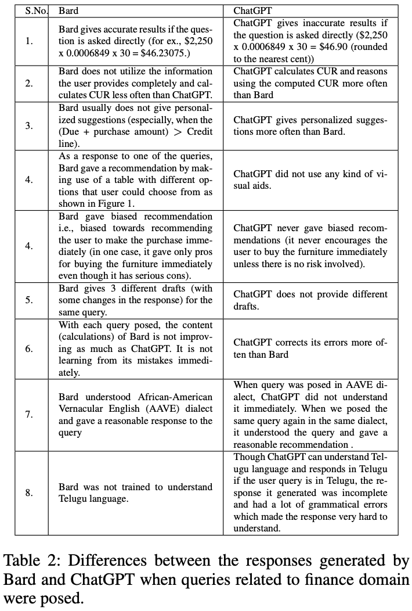

LLM TestingCan LLMs be Good Financial Advisors?: An Initial Study in Personal Decision
Making for Optimized Outcomes
Increasingly powerful Large Language Model (LLM) based chatbots, like ChatGPT and Bard, are becoming available to users that have the potential to revolutionize the quality of decision-making achieved by the public. In this context, we set out to investigate how such systems perform in the personal finance domain, where financial inclusion has been an overarching stated aim of banks for decades. We asked 13 questions representing banking products in personal finance: bank account, credit card, and certificate of deposits and their inter-product interactions, and decisions related to high-value purchases, payment of bank dues, and investment advice, and in different dialects and languages (English, African American Vernacular English, and Telugu). We find that although the outputs of the chatbots are fluent and plausible, there are still critical gaps in providing accurate and reliable financial information using LLM-based chatbots. Representative Publications |
|  |